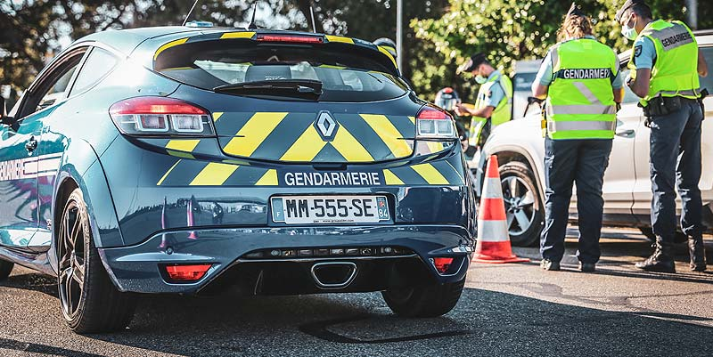

La vitesse des autoroutes favorise t-elle les accidents mortels ?
Rédigé par Lucas DUVERNEUIL
La vitesse est-elle un facteur qui augemente la mortalité sur les routes ? Peut-on dire que rouler moins vite c'est avoir moins de chances d'avoir un accident et d'en mourrir ? C'est ce que vous allons essayer de déterminer dans cet article.

Image par Radio Vinci Autoroutes
Le préjugé
Est-ce-que les autoroutes sont dangereuses ? A priori, nous pourrions penser que c’est la route la plus redoutable, étant donné que c’est sur celle-ci où l’on roule le plus vite. Donc, plus on roule vite, plus on aurait de chance d’avoir un accident.
Ce que nous disent les chiffres
Grâce au graphique, nous avons pu comprendre que les voies communales sont les routes où il y a le plus d’accidents mais c’est aussi l’une des routes ou le taux de mortalité est le plus bas. En effet, c’est une voie que nous connaissons bien, qui est familière et donc, nous faisons moins attention. Cependant, la complexité du terrain de ces routes nous oblige à rouler moins vite, d'où le bas taux de mortalité.
Aussi, le taux de mortalité est plus élevé sur les routes départementales. Cela pourrait s’expliquer de la même façon que pour les routes communales sauf qu’on y roule plus vite et que les routes sont tout aussi sinueuses que les communales.
Réponse à la problématique
Pour conclure, l’autoroute est bien moins accidentogène et à un taux de mortalité d’une voie communale (environ 1,35%). Donc, la vitesse peut favoriser les accidents mortels, mais tout dépend de la vitesse et de la disposition de la route : plus une route est sinueuse, plus on y roule vite et plus la mortalité augmente.
Et au contraire, comme les autoroutes, plus les routes sont entretenues, sécurisées et dégagées moins la mortalité est importante.
Donc, ce n’est pas la vitesse qui favorise les accidents et la mortalité mais c’est plutôt l’aménagement des routes. En effet, si on a moins d’accidents sur l'autoroute c’est parce qu’elle est aménagée pour rouler à 130km/h. Tandis que sur les routes départementales et communales, la chaussée est moins adaptée à la vitesse et est donc plus accidentogène.